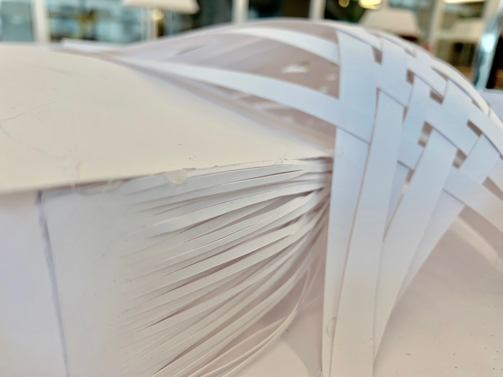
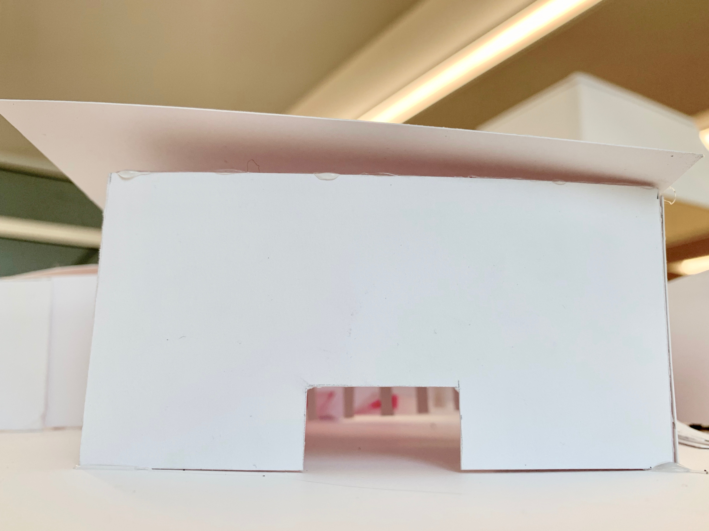
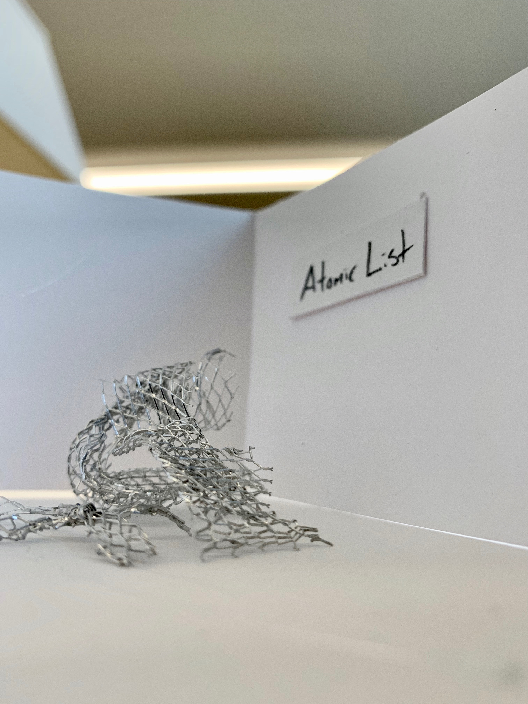
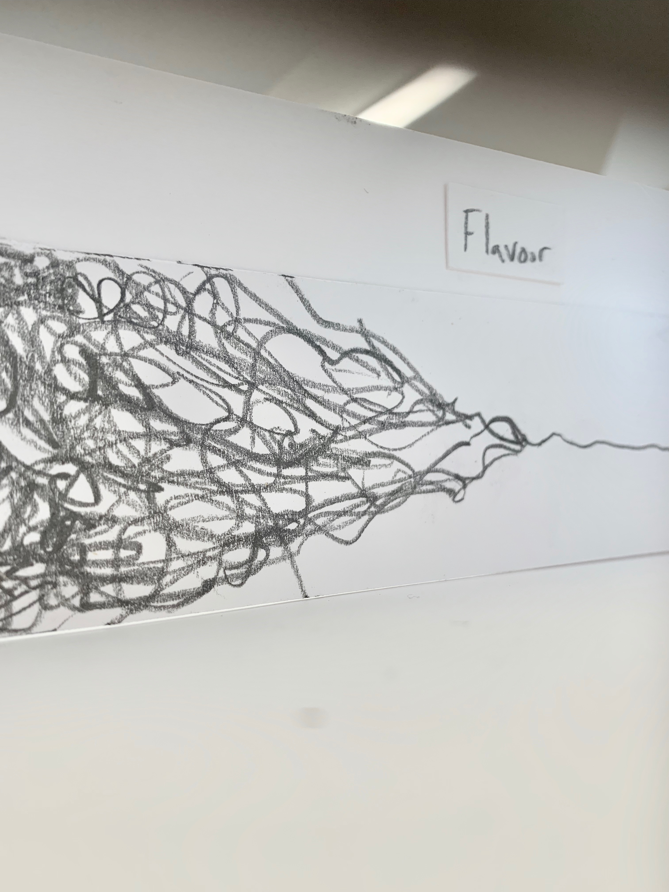
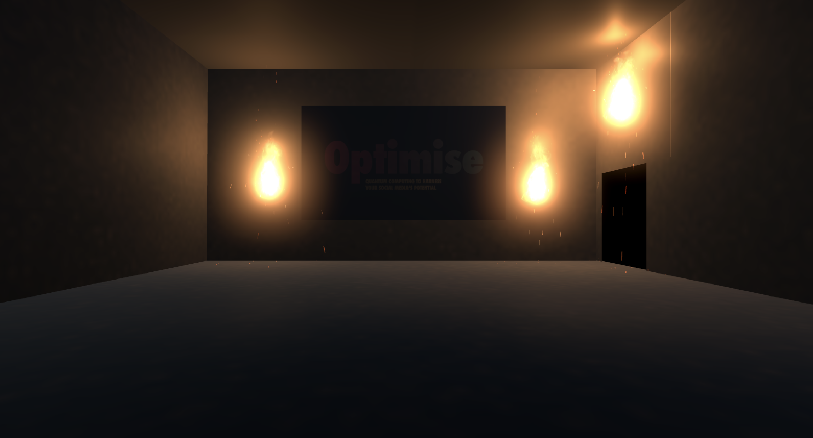
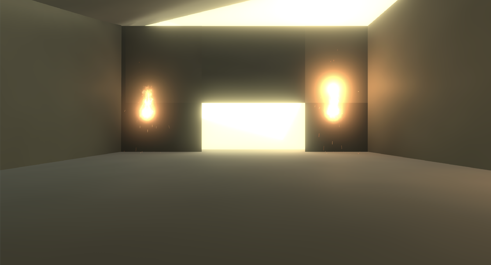

Case Study
Optimise can be setup in preferences to suit desires of needs. In this case study, we look at Sam, a 23 year old Instagram influencer looking to expand his demographic, impress his sponsors, and overall offer a more cohesive aesthetic to his followers. Sam is a creative, and wants to feel like the pictures are his, but is open to exploring new ways of expression and gaining more influence. Always on the move, Sam can't afford to have his own Quantum Computer editing suite or spend too much time studying emerging trends on Instagram, but he wants to stay current in an era of professional social media.

Dystopian Futures
Predicted Outcomes in the face of a Quantum Computer-led Future


When Einstein eloquently illustrated the fundamental aspects that came to be known as Quantum Mechanics, he described a new way of understanding the world around us down to the essence of the way matter and light moved and functioned. In 1927, Neils Bohr and Werner Heisenberg eloquently explained Quantum Mechanics in now the well-known Copenhagen Interpretation. These three men would go on to lead nuclear weapon programs, Heisenberg in Germany, and Born and Einstein on the Manhattan project. When Little Boy detonated over Hiroshima in 1945, the stage was set for new notions of quantum and atoms to control how populations came to power and protected themselves.
Richard Feynman’s 1959 lecture “There’s Plenty of Room at the Bottom’ declared that in order to properly represent the new universe of quantum physics, quantum computers must be produces. Classical computers made up of bits would not sustain us for long, and one day computers that utilised qubits would rule.
Quantum computers began to take shape in the form of algorithms and math in the late 80’s and 90’s. Peter Shor’s Shor algorithm allowed quantum computers to factor exponentially larger numbers than classical computers, allowing quantum computers to easily bypass encryptions.
In the 2010’s companies such as Google, IBM, NASA, and the now famous D-Wave Systems started to experiment with making quantum computers with increasing numbers of qubits. The implementation of topographical quantum computers in 2020 made them relatively stable, and quit numbers exploded, with the D-Wave Hex with 600 qubits.
2025 - Optimise brings quantum computers to the masses. Using server farms running on D-Wave QC’s, users are able to mimic popular aesthetics and optimise their photos for the masses. Mass usage of algorithms in media create a singular taste and flavour, with competition between media groups and individuals culminating in the Optimise shoot-off Flavour, which aggregates a number of resources beyond just Instagram to establish trends and patters, all of which are quickly taken up by media companies. Media becomes a mimicry of itself.
2026 - University of Washington creates a series’ of proteins to combat a number of illnesses, National Geographic announces that people born post 2020 will be able to live for up to 300 years.
Governments and Hackers alike develop quantum encryption attacks that result in the 2028 WikiLeaks Hisenburg Leak, resulting in massive social upheaval, and public identity reveals.
December 2028 - the Vit Jul, or White Christmas marches begin in Scandinavia and spread across the globe. People wear white masks to shield their identity, but this is seen retrospectively by many as a representation that Identity was truly lost, and all privacy is equally public.
In 2029, Elven Technologies reveals their protein pack program, which studies your biology, and product new hormones and proteins that could combat ageing and illness.
As the Western world begins to adopt Elven technologies, population estimates across the world explode, with a predicted 30 billion people by 2040. in 2032, John John John, a new government controlling from unknown locations calls for action, using data from Elven technologies and other algorithms to locate and name individuals who should be culled for population control.
A technological war ensues, with guerrilla hackers using quantum computers to quickly track and eliminate individuals on what became knows as the ‘Atomic List.’ Nearly 1 billion people across the globe are slaughtered in various ways, before the terrorist organisation Spellbound release ‘Homo Deus’ a flu that was create by scientists using quantum computers. It contains embedded DNA that can quickly assess and mutate in order to adapt to the host, killing them.
By 2035 50% of the population has been eliminated. However, civil unrest leads to unreliable grid systems, and a large group galvanise around the ‘Civiliastion 0’ movement, calling for an end of centralised algorithms and quantum computers. Civilisation 0 prides itself on lacking widespread usage of electronics, and instead prefers to use traditional, not electric methods of transport, production, and life in general.
The Civilisation 0 Memorial Museum to the Atomic List in Respect to the Vit Jul protestors is a non-profit, decentralised, and non-powered homage to the past 30 years and more of Quantum Computers and their effect on the human race.
The Civilisation 0 Memorial Museum to the Atomic List in Respect to the Vit Jul Protestors
Strand-like structures and woven material represents Quantum entanglement and the quantum mechanics theory of all outcomes being possible until observed.
     Above are Unity Sketches demonstrating the lighting via natural and torch light inside the museum.